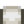
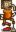

Super Cucumber
| Super Cucumber | ||||||||||||||||||||||||||||||||||
| A rare, purple variety of sea cucumber. | ||||||||||||||||||||||||||||||||||
| Information
| ||||||||||||||||||||||||||||||||||
| Location | Ocean • Ginger Island • Submarine at Night Market | |||||||||||||||||||||||||||||||||
| Time |
| |||||||||||||||||||||||||||||||||
| Season | ||||||||||||||||||||||||||||||||||
| Weather | Any | |||||||||||||||||||||||||||||||||
| Difficulty | 80 | |||||||||||||||||||||||||||||||||
| Behavior | Sinker | |||||||||||||||||||||||||||||||||
| Size (inches) | 12–37
| |||||||||||||||||||||||||||||||||
| Fishing XP | 29 | |||||||||||||||||||||||||||||||||
| Energy / Health |
| |||||||||||||||||||||||||||||||||
| ||||||||||||||||||||||||||||||||||
| ||||||||||||||||||||||||||||||||||
The Super Cucumber is a fish that can be caught in the ocean at The Beach or on the Beach Farm during Summer and Fall evenings, and on Ginger Island South, Southeast, West (ocean), and the Pirate Cove during any season. It can also randomly be found in Garbage Cans during Summer and Fall, or at the Traveling Cart for  750–1,250g. There is a 4% chance to catch a Super Cucumber during the deep-sea submarine ride at the Night Market during Winter 15-17 (7% if using a Curiosity Lure). The Statue Of Endless Fortune produces one Super Cucumber per year on the Wizard's birthday, Winter 17.
750–1,250g. There is a 4% chance to catch a Super Cucumber during the deep-sea submarine ride at the Night Market during Winter 15-17 (7% if using a Curiosity Lure). The Statue Of Endless Fortune produces one Super Cucumber per year on the Wizard's birthday, Winter 17.
Super Cucumber can be caught regardless of time of day or season using Magic Bait.
Map
The Super Cucumber can be found at the beach, on Ginger Island, and in the submarine ride at the Night Market (Winter 15-17).

Gifting
| Villager Reactions
| |
|---|---|
| Love | |
| Neutral | |
| Dislike | |
| Hate | |
Bundles
Super Cucumber is not used in any bundles.
Recipes
| Image | Name | Description | Ingredients | Energy / Health | Recipe Source(s) | Sell Price | |||
|---|---|---|---|---|---|---|---|---|---|
| Maki Roll | Fish and rice wrapped in seaweed. |
|
|||||||
| Quality Fertilizer | Improves soil quality, increasing your chance to grow quality crops. Mix into tilled soil. | N/A | |||||||
| Sashimi | Raw fish sliced into thin pieces. |
|
Tailoring
Super Cucumber is used in the spool of the Sewing Machine with Cloth in the feed to create a dyeable  Tube Top. It is a purple dye when used in the spool of the Sewing Machine with a dyeable clothing item in the feed. It can be placed in the purple dye pot at Emily's and Haley's house for use in dyeing.
Fish Pond
Super Cucumbers can be placed in a Fish Pond, where they will reproduce every 5 days. The initial pond capacity is 3 fish, but the capacity can be increased to 10 by completing three quests. When the population of the pond reaches 3, the color of the water changes to purple. The primary output is purple Super Cucumber Roe, but more valuable items are possible starting at population 9.
| Pond Capacity | Quest Item | Fishing XP Granted | |
|---|---|---|---|
| Before Quest | After Quest | ||
| 3 | 5 | 3 Coral, 1 Honey, 1 Oyster, or 3 Refined Quartz | 45 |
| 5 | 7 | 1 Dried Starfish, 2 Emeralds, 2-3 Omni Geodes, or 2-3 Purple Mushrooms | 45 |
| 7 | 10 | 1 Diamond, 3 Gold Bars, 1 Iridium Ore, 1 Jelly, or 1 Pickles | 45 |
| Item(s) Produced | Fishing XP Granted | Population | % of Items | Overall Daily Chance |
|---|---|---|---|---|
| 16 | 1-8 | 100% | 23-79% | |
| 9-10 | 90% | 79-86% | ||
| 14 | 9-10 | 5% | 4-5% | |
| 14 | 9-10 | 5% | 4-5% | |
| Nothing | 1-8 | 0% | 77-21% | |
| 9-10 | 0% | 13-5% |
Quests
- Item Delivery: One Super Cucumber may be randomly requested in Summer or Fall at the "Help Wanted" board outside Pierre's General Store for a reward of
 750g and 150 Friendship points.
750g and 150 Friendship points.
Secrets
- If a Super Cucumber is placed in the brown box located inside the fenced area north of the Blacksmith, the player will receive the  ??HMTGF?? statue.
Trivia
- Prior to 1.5.5, the Livin' Off The Land television channel stated that the Super Cucumber comes out during Winter. It does not come out during that season, with the exception of the submarine ride at the Night Market.
History
- 1.3.27: Added chance to catch during the Night Market.
- 1.4: Fixed bug where an entire stack of Super Cucumbers would be consumed when interacting with the brown box. Added iridium quality. Can now be used in Tailoring.
- 1.4.4: Fixed a mistake in the game data that prevented super cucumber-specific fish pond data from being applied (in earlier versions, super cucumber used the same fish pond data as all generic ocean fish).
- 1.5: Can now be caught on Ginger Island during any season on Island West (ocean), South, Southeast, and in the Pirate Cove. Chance of catching it in the submarine can now be increased by using a Curiosity Lure.
- 1.5.5: Fixed typo in Livin' Off The Land television channel incorrectly stating that the Super Cucumber comes out during Winter.
- 1.6: Fixed bug allowing all Night Market fish to be hooked with the Training Rod during the submarine ride. Elliott now hates Super Cucumber.